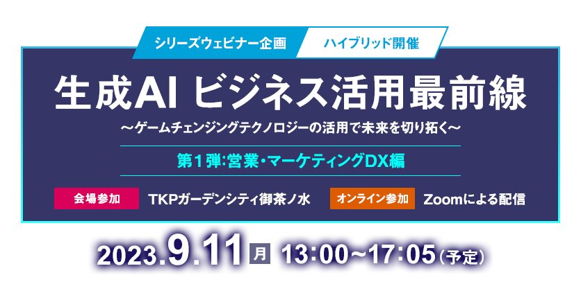

お申し込み受付を
終了しました
いま話題の生成AI「ChatGPT」、驚くほど自然な文章で応答してくれるため、様々な分野でのビジネス活用が期待されています。一方、ビジネスに活用するとなると気になるのが回答の正確性やリスクです。
このセミナイベント「シリーズウェビナー企画・生成AIビジネス活用最前線」では、有識者を交えてビジネス分野ごとに生成AIのビジネス活用の可能性やリスク、課題を正しく認識し、皆様のビジネスの高度化に役立つヒントをお届けします。
第1弾の営業・マーケティングDX編では、営業やマーケティング分野における企業のDX推進事例などにもふれながら、生成AI活用の在り方を有識者と共に考察します。
本セミナー終了後に実施する
主催者アンケート回答者の中から抽選で100名様に
「Amazonギフト券（1,000円分）」進呈！
開催概要
- 名称
-
生成AIビジネス活用最前線
～ゲームチェンジングテクノロジーの活用で未来を切り拓く～
第1弾：営業・マーケティングDX編
- 日程
-
2023
年
9
月
11
日（月）
13：00～17：05（予定）
- 会場
-
会場参加：TKPガーデンシティ御茶ノ水
オンライン参加：Zoomによる配信
- 主催
- 日経BP 総合研究所
- 協力
- 日経クロストレンド、日経クロステック
- 協賛
- AI Shift、日本マイクロソフト、セールスフォース・ジャパン、ZEALS（ABC順）
- 参加料
- 無料（事前登録制）
- 定員
-
会場定員：50名
※定員になり次第、受付を終了します。
※オンライン参加の定員はございません。
プログラム
※講演者や講演時間など、プログラムは変更になる場合がございます。予めご了承ください。
-
13：00 ~ 13：10
-
主催者挨拶
主催者挨拶

日経BP 総合研究所
チーフコンサルタント
主席研究員杉山 俊幸
-
13：10 ~ 13：50
-
パネルディスカッション
生成AIでどこまで営業は変わるのか
日清食品ホールディングス
執行役員
CIO グループ情報責任者成田 敏博 氏1999年、新卒でアクセンチュアに入社。 公共サービス本部にて業務プロセス改革、基幹業務システム構築などに従事。2012年、ディー・エヌ・エー（DeNA）入社。グローバル基幹業務システム構築プロジェクトに参画後、IT戦略部長として全社システム企画・構築・運用全般を統括。その後、メルカリ IT戦略室長を経て、2019年12月に日清食品ホールディングスに入社。2022年4月より現職。

ELYZA
取締役CMO
三井住友カード
Head of AI Innovation野口 竜司 氏国産LLM（大規模言語モデル）開発やGPT活用を行う東大松尾研発のELYZA 取締役CMO、三井住友カード株式会社 Head of AI Innovation、カウネット社外取締役として活動。日本ディープラーニング協会、金融データ活用推進協会の顧問なども務める。個人の活動として大企業のAIアドバイザーとしても活動。大企業での文系AI塾の開校などを通じて、GPT時代のAI活用人材の育成にも力を入れている。著書に『文系AI人材になる』など。
＜モデレーター＞
日経BP 総合研究所
チーフコンサルタント
主席研究員杉山 俊幸生成AIのビジネス活用への関心が高まっている。とりわけ営業、マーケティング分野での活用に期待が高まる。どのように取り組めば、生成AI活用の効果を最大化する可能性が高まるのか──。全社横断で取り組みを進めながら、一方で特定業務においては深掘りした生成AI活用の実際や、今後の可能性を紹介する。具体的な実例を元に当事者によるディスカッションで生成AI活用の要諦に迫る。
-
13：50 ~ 14：00
-
休憩
-
14：00 ~ 14：30
-
ソリューション講演
生成AI搭載の「Microsoft Sales Copilot」で変わるこれからの営業
日本マイクロソフト
クラウド&AIソリューション事業本部
ビジネスアプリケーション統括本部
テクニカルスペシャリスト安井 洋介 氏大手SIerなどを経て2022年日本マイクロソフトに入社。
Dynamics 365 CRMとPower Platformの技術営業に従事。
小売、商社、Gaming領域などのお客様を主に担当している。マイクロソフトは、あらゆる製品にAI機能を搭載していくことを宣言し、営業向けには、生成AI搭載のSales Copilotを提供しています。
今後、AIによって従来の営業活動はどう変わっていくのか、最新のAI機能をデモを交えてご紹介いたします。
-
14：35 ~ 15：05
-
ソリューション講演
信頼こそが生成AI活用の鍵！SalesforceがAI+データ+CRMで実現する 新時代の営業とは？
セールスフォース・ジャパン
ソリューション・エンジニアリング統括本部
首都圏SE本部 第2ソリューション部
Lead Solution Engineer安 炳模 氏セールスフォース・ジャパン
マーケティング統括本部
プロダクトマーケティング ディレクター秋津 望歩 氏昨今話題の生成AIをどのように営業活動に活かすのか、ご関心をお持ちの方も多いのではないでしょうか。
企業が蓄積してきたお客様のデータを安全に取り扱い、成果につながるAI活用を実現するには、「信頼」が何より重要です。
本セッションでは、Salesforceが提供する最新のAIテクノロジーが叶える新時代の営業活動を、デモンストレーションとともにご紹介します。
-
15：10 ~ 15：40
-
生成AIを活用した対話型エージェントによる、企業の売上向上
AI Shift
マーケティング
マーケティングマネージャー高野 萌々子 氏新卒でサイバーエージェントに入社し、株式会社AI Shiftでチャットボットやボイスボットのセールスを担当。
その後、2022年12月、LLMビジネス開発室の新設に伴い、生成AIを活用したサービスやプロダクトの販路拡大に従事。AI Shift
AIチーム責任者友松 祐太 氏2018年新卒入社。株式会社AI Shiftでチャットボットとボイスボットのプロダクト開発に従事。
AIチーム責任者として大規模言語モデル, 音声対話，テキスト対話に関するロジックの研究開発，大学との産学連携，データ可視化などに取り組んでいる。生成AIは業務効率化の場面で活用されることが多いですが、企業の売上向上に寄与する場面でも活用されるようになりました。
本セッションでは、「顧客のニーズに合わせた最適なプランを提案する接客や営業活動」を可能にする「対話型エージェント」についてデモ動画と併せてご紹介いたします。
-
15：45 ~ 16：15
-
来るべき生成AI時代に向けてマーケターは何をすべきか
ー解としてのチャットコマースーZEALS
執行役員渡邊 大介 氏2006年、サイバーエージェントに新卒入社。
アカウントプランナーとして大手ナショナルクライアントの戦略立案に従事。
複数の新規事業を起ち上げた後、2014年より同社の新卒採用・育成責任者に就任。
2017年より、リクルートとサイバーエージェントのSaaS系ジョイントベンチャー「ヒューマンキャピタルテクノロジー社」を設立し、取締役に就任。2020年11月、ジールスへ入社。生成AI技術の急速な進化により、私たちの日常やビジネスに変革の波が訪れています。変化へ対応していくために、マーケターは今何をするべきなのか。これまでのデジタルマーケティングの進化を紐解きながら、一つの解として有効な手段となる「チャットコマース」について解説します。
-
16：15～16：25
-
休憩
-
16：25 ~ 17：05
-
特別対談
生成AIの産業インパクト、価値の大転換とリスクを考える
IT批評家尾原 和啓 氏
1970年生まれ。京都大学大学院工学研究科応用システム専攻人工知能論講座修了。マッキンゼー・アンド・カンパニーにてキャリアをスタートし、NTTドコモのiモード事業立ち上げ支援、リクルート、ケイ・ラボラトリー（現KLab、取締役）、コーポレートディレクション、サイバード、電子金券開発、リクルート（2回目）、オプト、Google、楽天（執行役員）の事業企画、投資、新規事業に従事。内閣府・新AI戦略検討、経産省・対外通商政策委員等を歴任。NHK「令和ネット論」にて「DX」「メタバース・NFT」「Web3」を解説。『アフターデジタル オフラインのない時代に生き残る』『ディープテック 世界の未来を切り拓く「眠れる技術」』（共に共著、日経BP）など著書多数。
日経BP 総合研究所
チーフコンサルタント
主席研究員杉山 俊幸インターネットが登場した時と同等以上のインパクトをもたらす。生成AIをめぐっては、そんな見方も少なくない。もっとも影響を与える分野が、マーケティングや営業と言われる。生成AIの活用で、顧客へのメール送信やバナー、動画の制作といった作業が自動化できることへ関心が集まりがちだが、そもそも「ものを買う」という体験そのものが変わる可能性があるという。最新事例のデモ実演などを交えながら、目からウロコの40分間。実践への具体的ヒントを提供する。併せてビジネス活用でのリスクや懸念点など、読み解いていく。
お申し込み
◆ 視聴環境事前ご確認および注意事項について
※本セミナーの配信プラットフォームは「Zoom」を予定しております。
▼Zoomの推奨環境について
※Zoomの接続環境は【パソコン、有線またはWi-Fi】を推奨しています。
- 本セミナーを視聴するには、インターネットに接続されたパソコン（Windows、Mac）、あるいはスマートフォン・タブレット（iOS、Androido）をご用意ください。
- パソコンで視聴される場合は、Chrome、Firefox、Safari、Edgeなどのブラウザーが必要です。
できるだけアプリのご利用をお願いします。 - スマートフォン、もしくはタブレットで視聴される場合は、Zoomのアプリを事前にインストールしてください。
https://zoom.us/download#client_4meeting - 通信環境によっては映像が一時中断する場合があります。
再開にしばらくお待ちいただく場合がありますが、予めご了承ください。
▼Webセミナーご視聴に際し、以下の事項にご同意ください。
- 上記URLはセミナーに参加する方のみ利用可能とし、再配布を禁止します。
- 受講者は、動画を録画・キャプチャーすることは一切できません。
また、SNSなどへのアップも禁止します。
もし、発見した場合、事務局は削除を要求できることとします。 - セミナーの内容や講師の情報などは、セミナー内のみとし、口外しないでください。
- システムトラブルなどにより、画像・音声に乱れが生じた場合も再送信はできませんので、予めご了承ください。
なお、音声、画像は受講者でご調整ください。
また、サービス利用にあたってのサポートは致しかねます。 - 配信中、異常と思われる接続を発見した場合、予告なく切断することがあります。
- システムトラブルなどによる画像・音声の乱れは、ご自身でご対応ください。
サービス利用にあたってのサポートは致しかねます。
本イベントへのお申し込みには、「日経ID」への会員登録（無料）が事前に必要となります。
すでに会員の方は、ログイン後、ご登録内容をご確認のうえお申し込みください。
未登録の方は、画面の指示にしたがい、登録を完了させてください。
お問い合わせ
日経BP読者サービスセンターセミナー係
お問い合わせお申し込み受付を
終了しました